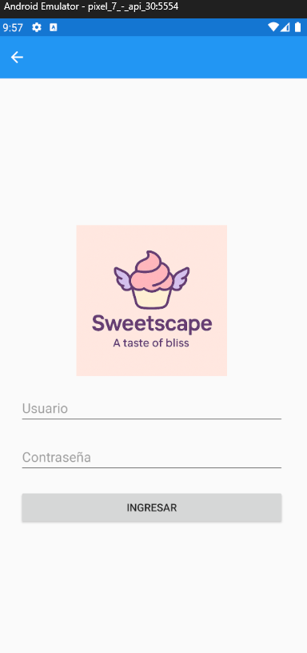
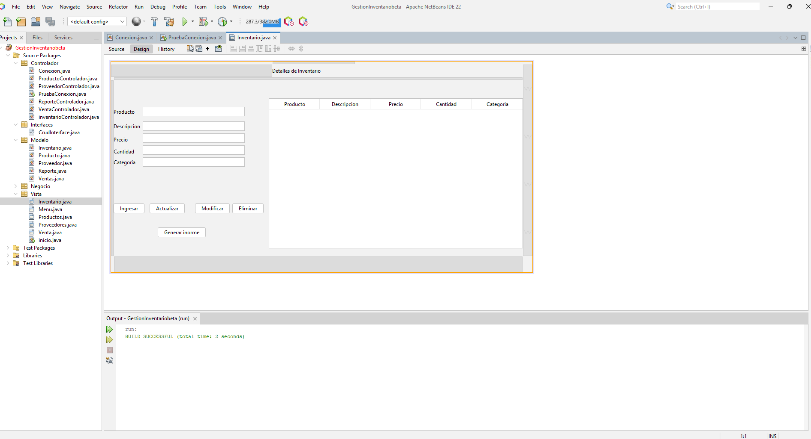

Desarrollo
C#, .NET, Xamarin, Java, JavaScript, HTML y CSS.
Desarrollador Full-Stack
Transformo ideas en aplicaciones funcionales, claras y escalables, combinando desarrollo web, soluciones móviles, bases de datos y proyectos de integración con hardware.
Sobre mí
Soy un apasionado por la tecnología y la resolución de problemas, con experiencia desarrollando aplicaciones modernas, eficientes y escalables. Me especializo en escribir código limpio y estructurado, entendiendo primero las necesidades del usuario para convertirlas en soluciones digitales con impacto.
Me motiva enfrentar nuevos desafíos, perfeccionar mis habilidades y aportar valor en cada proyecto. Creo en la mejora continua, el trabajo colaborativo y el poder del desarrollo para transformar ideas en productos útiles.
Habilidades
Herramientas aplicadas en proyectos académicos y personales, con foco en entregar soluciones completas.
C#, .NET, Xamarin, Java, JavaScript, HTML y CSS.
MySQL, JDBC, conexiones a base de datos, validación y manejo de errores.
Visual Studio 2022, NetBeans, Arduino IDE, Git y GitHub.
Interfaces simples, documentación clara, mejora continua y pensamiento orientado a impacto.
Proyectos destacados
Cada proyecto muestra una combinación distinta de lógica, interfaz, datos e integración técnica.

Aplicación móvil
Aplicación desarrollada en .NET con Xamarin para gestionar clientes, productos y sucursales de una pastelería.


Contacto
Si tienes una idea, un proyecto o una oportunidad donde pueda aportar, conversemos. Estoy abierto a colaborar, aprender y crear soluciones útiles.